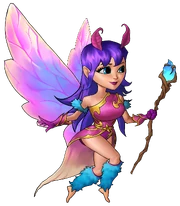
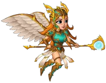
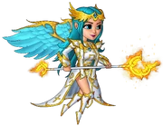
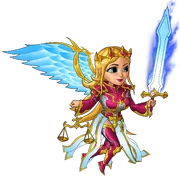

Grace is a fairy and one of the guardians in the game. Grace unlocks when Vermilion has reached his second evolution. She can attack 10 times per second and will hit one enemy at a time. She provides your heroes with the all attributes aura. For players on Steam, Grace's attack can be visually changed from lightning bolts to bananas with the "Go Banana!" DLC.
Light, it is said, was the beginning of our world. The source of all things good and pure. In the moment of creation, everything the Light touched was blessed with life.
Nothing, however, is without balance. For everything the Light did not touch, was known as Darkness, and everything inside each of them served their greater purpose. What that is, no-one truly knows.
Light and Darkness cannot be touched. They can be seen and felt, but never held. Only a small part of their eternal battle is felt in the world, as their servants fight in their name.
Darkness, by its very nature, was born tricky. The things that spawned inside it sought the Light by instinct, and in order to keep them by its side, it whispered to them lies and promises it never intended to keep. These vile creatures grew to hate beings in the Light and sought only to corrupt them and lure them into their never-ending misery. Light was different. Light was influenced by joy and gentle guidance, and the first creatures able to think for themselves became its agents. In ancient myth, the first, called Angels, directly channeled Light's truth to the other beings born into it. They were caretakers of the first Elves, then the Dwarves, then the Humans and the others. As these new residents of the world learned the ways of the Light, the Angels slowly vanished into their Light, feeling their work was done. Only the smallest and purest remained behind, in the wild forests of the world, to care for the last untamed parts of creation. In children's tales, these small guides were called Fairies.
Fairy
Fairies are small and gentle, more helpers than fighters. Although their home is in the hearts of forests, the rise of Darkness has called them out, to do whatever they can to protect all life, the creation of Light. They appear to true heroes, champions of the Light, and assist where they can. Their tiny, delicate wings keep them flying near their hero, channeling their energy in bursts of wild magic and shielding him from enemy fire. When they first appear to a warrior, it is almost certain that destiny is about to take its course. Grace was one of these Fairies - she chose you, a hero with great potential, to be your aid for ever.

Nymph
Fairy that has seen battle against the servants of Darkness knows it must grow. It reaches with its feelings deeper into its ancient past and finds its roots, the Light itself. The first true connection it makes with the Light begins its transformation from helper to fighter, the Nymph. The ancient wild magic of the Nymph is much more powerful than that of a Fairy. Fighting alongside you, Grace has learned enough of the ways of combat to become a Nymph. As long as you are accompanied by such her, you can survive the horrors of Darkness and prove that you are a true servant of Light. Under Grace's protective aura you can devastate the forces of evil while she spreads terror among enemy ranks with her magical blasts.

Valkyrie
Your battle-hardened companion Grace is no longer gentle. She has forgotten her role as a memory of the world's creation and as a guardian of nature. Once a small Fairy, Grace as a Nymph has grown beyond a simple guide and protector to heroes - she has become a weapon against the Darkness. As Grace feels the fire and glory of battle in the name of the Light, her aura hardens, taking the form of glorious armour and golden wings, transforming into a Valkyrie, a Fairy General. Other Nymphs and smaller Fairies look to Valkyries like Grace for direction and leadership in the battlefield. Only the truly tested warriors are accompanied by Valkyries, which they see as more than guides - they are their sisters, bonded in their fight and belief in all good things. One should not be fooled by their intentions - in combat, the pair radiates with beams of light and explosions of magic, daring the Darkness to test it.

Angel
As the myth of the world's creation is told, the first form the Light took in the world as it pushed back the Darkness was the Angel. Beautiful creations with shining armor and feathered wings, these existence did not have to serve the Light - they were part of it. If Fairies and Nymphs are echoes of the forgotten glorious creation, and Valkyries are a distant memory, the Angel is the physical existence of Light in the here and now. Only the mightiest heroes, known across the land as great leaders and symbols of the resistance against the Darkness have an Angel appear to them. They are gentler than Fairies, more faithful than Nymphs and stronger than Valkyries. They are a rare sight indeed, only on the very front of the line, protecting their heroes and smiting the horrors that threaten creation. Soldiers, hungry and tired, wounded from battle, become as strong as they ever were only from the distant aura of an Angel. They know their cause is right and a powerful hero has joined their battle. You, Hero, are nothing less than blessed to have the Angel Grace by your side.

Archangel
Clerics, shamans, druids and mystics have written endless tomes about the nature of the Light across the centuries. The Angel, they wrote, even if it could exist again, would only be a fragment of the Light, a shard. The Darkness is whole, a gigantic mouth that only wants to consume and destroy. It was only in a united effort that it could be defeated, as it was in the hearts of good men, women and children that the whole of Light could be found. Angels would unite us, but we would be the ones to truly fight. They were right and wrong.
Now is the Age of Beginning. You have proven yourself time and time again as a legend in your own lifetime. Your heart is fiery and pure - after all, is that not why, so long ago, a tiny Fairy approached you in the first place? Is that not why Grace stood by you as a Nymph and fought alongside you when it began to remember its true form, the Valkyrie? You rose through the ranks and your name became a symbol of hope for the Light and Grace was with you.
Do you see know? You knew yourself, when she cast her weaker form aside and grew to an Angel, that you had become one of the greatest and mightiest. You humbly accepted it even though it was more than an honor, it was a sign. The books wrote that Grace was there to protect and guide you until you could fight the Darkness as a united people and they were right; but they were also wrong. You are one half, and the Light itself is another. Together, you can push back the eternal threat. You are the greatest hero of the realm and it is only fitting that your counterpart become the greatest Angel of the Light. She embodies the spirit of creation.
You are the Leader of the Realm and she is Grace the Archangel.
{kind=link}
{kind=link}
{kind=link}
{kind=link}
{kind=link}
{kind=link}
{kind=link}
{kind=link}
{kind=link}
{kind=link}